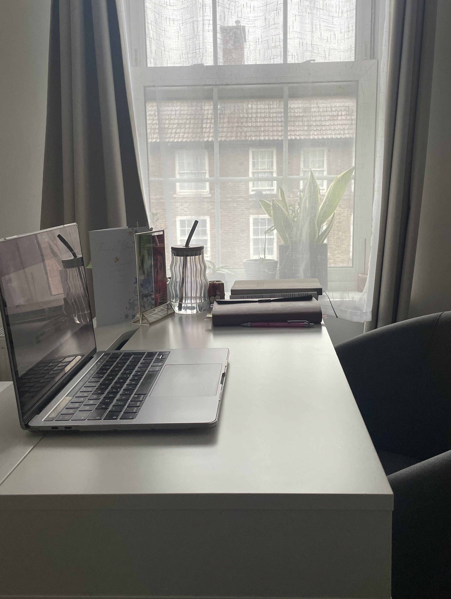

About
Halfway through 2026, I looked back at my 2025 calendar, and one word kept appearing: Learn.
Week after week, I had set aside time to learn. But when I looked back at the year, all I saw was the word “Learn” sitting on a pink background.
I had spent so much time watching tutorials, reading documentation, and taking notes, but very little of that learning had turned into something I could actually see, use, or build on. I realised how easy it is, especially when teaching yourself to code, to fall into the trap of continuous learning without ever putting it into practice. While learning is a never-ending journey, progress requires something to show for it.
So, I decided to stop passively learning and start building. I wanted to create something real and tangible that I could look back on and see how far I've come.

Why I Created This Page
I wanted a dedicated space to document this shift. This is a page where I share the projects I build, the challenges I face, how I overcome them, and the things I learn along the way.
It is a place for honest reflection and progress. My hope is that by sharing my breakthroughs and the things that have helped me, I can encourage other self-taught developers on the same journey to step out of the learning loop and become builders.
A Little About Me
I've always enjoyed creating things and figuring out how things work, and somewhere along the way, I found something I genuinely enjoy doing — building interactive web applications. I've been developing my skills through The Odin Project curriculum and working towards becoming a front-end developer.
When I'm not coding away at my desk, I enjoy spending time in nature (especially hiking), reading, hanging out with family, and asking myself when I'll finally get back to playing the piano again-I'm working on it! :)
With that said, if you're also learning to code, building projects, or figuring out your own path into software development, I'd love to hear from you!